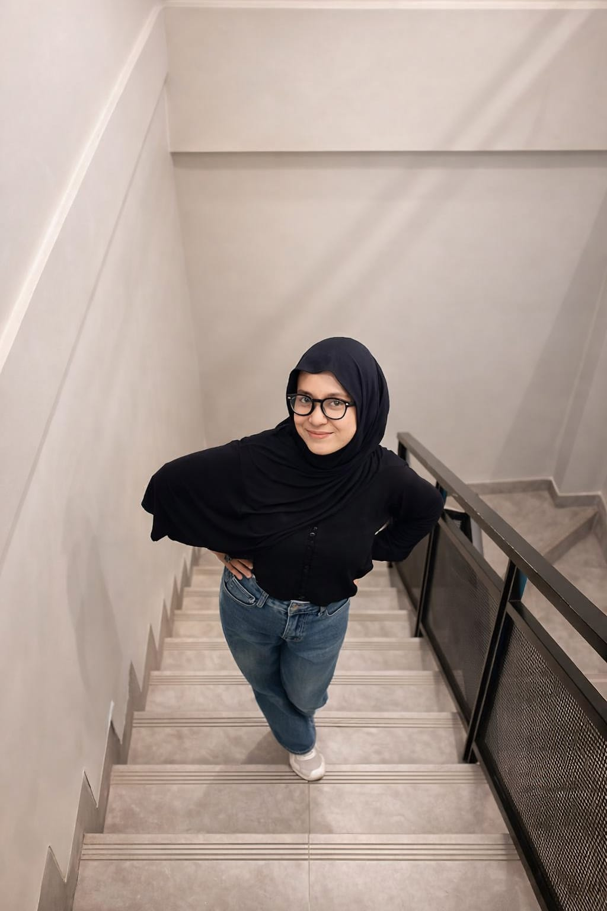

<div class="max-w-7xl mx-auto mt-10 px-4 md:px-6">
  <div
    class="relative flex flex-col-reverse lg:flex-row items-center justify-center gap-10 p-8 md:p-12 rounded-[2rem] bg-white/5 border border-white/10 backdrop-blur-sm overflow-hidden shadow-2xl"
  >
    <div
      class="absolute -top-20 -left-20 w-64 h-64 bg-blue-600/20 rounded-full blur-[100px] pointer-events-none"
    ></div>
    <div
      class="absolute -bottom-20 -right-20 w-64 h-64 bg-pink-600/20 rounded-full blur-[100px] pointer-events-none"
    ></div>

    <div class="flex-1 space-y-6 text-center lg:text-left z-10">
      <span
        class="inline-flex items-center px-4 py-1.5 rounded-full bg-pink-500/10 border border-pink-500/20 text-pink-400 text-[10px] md:text-xs font-bold tracking-widest uppercase"
      >
        <span
          class="w-2 h-2 rounded-full bg-pink-500 animate-pulse mr-2"
        ></span>
        ────୨ৎ────
      </span>

      <h2
        class="text-4xl md:text-5xl lg:text-6xl font-extrabold leading-tight tracking-tight text-white"
      >
        Portofolio
        <span
          class="bg-gradient-to-r from-pink-400 to-blue-500 bg-clip-text text-transparent"
          >Siti Nurhaliza</span
        >
      </h2>

      <p
        class="text-gray-400 text-base md:text-lg max-w-md mx-auto lg:mx-0 leading-relaxed"
      >
        Web Developer yang fokus pada performa dan estetika. Berbasis di
        <span class="text-white font-medium">Indonesia</span>, bekerja untuk
        dunia.
      </p>

      <button
        class="group relative w-full md:w-auto overflow-hidden btn-primary bg-white text-black font-bold py-4 px-10 rounded-2xl shadow-xl transition-all hover:scale-105 active:scale-95 duration-300"
      >
        <span class="relative z-10">Let's Start!</span>
      </button>
    </div>

    <div class="relative group z-10">
      <div
        class="relative overflow-hidden rounded-3xl border-4 border-white/10 shadow-2xl rotate-2 group-hover:rotate-0 transition-all duration-500 ease-out"
      >
        
      </div>
    </div>
  </div>
</div>
